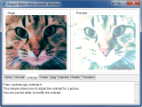

This directory contains samples for Rogue Wave Views Foundation.
| Reading a Rogue Wave Views Data File | |
| Loading and displaying a Rogue Wave Views data file. | |
| Interacting with Graphic Objects | |
| Displaying and interacting with graphic objects. | |
| Convex Hull | |
Using IlPool in a recursive algorithm.
| |
| Reading and Displaying Bitmaps | |
| Loads and displays supported bitmap images. | |
| Using Bitmap Data | |
| Shows you how to use bitmap data. | |
| Using the Color Quantizer | |
| Shows you how to use the color quantizer. | |
| Using Bitmap Data Operators | |
| Shows you how to use bitmap data operators. | |
| Using the JPEG Streamer | |
| Shows you how to use the JPEG streamer. | |
| Using an Animation Handler | |
Shows you how to use the IlvBitmapAnimationHandler class.
| |
| Using Alpha Blending | |
| Shows you how to use alpha blending. | |
| Using a Bitmap Transition Handler | |
Shows you how to use the IlvBitmapTransitionHandler class.
| |
| Using IlvIndexedBitmapData | |
|  | Shows you how to use the IlvIndexedBitmapData class. |
| Displacing Pixels | |
| Shows how to distort an image using turbulence. | |
| Creating an Emboss Effect | |
| Shows how to achieve an embossing effect. | |
| Using the IlvFilteredGraphic Class | |
Shows how to use the the IlvFilteredGraphic class.
| |
| Creating a Gold Effect | |
| Shows how to use bitmap filters to create a gold effect. | |
| Creating a Relief Effect | |
| Shows how to use bitmap filters to create a relief effect. | |
IlvGraphicPath object can be used.
| Rogue Wave Views Foundation: IlvGraphicPath | |
Using the capabilities of the IlvGraphicPath
object: disconnected polylines, polygons with
holes and drawing along a path.
| |
| Using multitouch events | |
| Demonstrates how to use Views multitouch events | |
| Header and footer sample | |
Header and footer usage with IlvPrintableLayout.
| |
| Basic PostScript Printing | |
| An example of how to print using Postscript printing. | |
| Postscript Printing using a Printing Setting Dialog Box | |
An example of how to print using an IlvPSPrinter and an IlvPostscripPrinterDialog instance.
| |
| Postscript Printing using a Printing Preview Displayer | |
| An example of how to print using Postscript printing with a printing preview displayer. | |
| Basic Windows Printing | |
| An example of how to print using a Windows printer. | |
| Custom Windows Printing without any Dialog Box | |
An example of how to print using IlvWindowsPrinter and an IlvWindowsPrinterDCFactory subclass.
| |
| Windows Printing using a Printing Preview Displayer | |
An example of how to print using IlvWindowsPrinter printing with a printing preview displayer.
| |
IlvTable object can be extended.
| Extending the IlvTable Class | |
An example of how to extend an IlvTable that can
be used in a specialized graphic object.
| |
| Rogue Wave Views with Windows | |
| Integrate Windows components into a Rogue Wave Views application. | |
| Windows with Rogue Wave Views | |
| Integrate Rogue Wave Views components into a Windows application. | |
| Dumping a Metafile | |
| Convert Rogue Wave Views data files to a Windows metafile. | |
| IlvMDIChild Property | |
Use of the IlvMDIChild property on Rogue Wave Views views.
| |
| Using GDI+ Features | |
| This sample shows the GDI+ features used in Rogue Wave Views. | |
| Using Rogue Wave Views in an Extern X Window | |
| This sample demonstrates how to take control over any existing X Window. | |
| Using Rogue Wave Views in an Extern Motif Gadget | |
| This sample demonstrates how to take control over any existing Motif gadget. | |
| Motif-based Rogue Wave Views Sample | |
| This sample shows you how to create a Rogue Wave Views application on top of a Motif application. | |
| Motif Drag-and-Drop | |
| Demonstration of Motif Drag-and-Drop from and to Rogue Wave Views. | |
| Inter-Application Drag-and-Drop | |
| Another demonstration of Motif drag-and-drop between two separated Rogue Wave Views applications. | |
| A Hook-Controlled ScrolledWindow Gadget | |
This sample shows how to connect an
IlvManagerViewHook to a Motif
ScrolledWindow gadget.
| |
| Changing the UI Language with Rogue Wave Views | |
| This sample demonstrates how to use localized message databases and change the language of the UI. | |
| Controlling Localized Input with Rogue Wave Views | |
| This sample demonstrates how to control localized input in input fields. | |
{kind=link}
{kind=link}
{kind=link}
{kind=link}
{kind=link}
{kind=link}
{kind=link}
{kind=link}
{kind=link}
{kind=link}
{kind=link}
{kind=link}
{kind=link}
{kind=link}
{kind=link}
{kind=link}
{kind=link}
{kind=link}
{kind=link}
{kind=link}
{kind=link}
{kind=link}
{kind=link}
{kind=link}
{kind=link}
{kind=link}
{kind=link}
{kind=link}
{kind=link}
{kind=link}
{kind=link}
{kind=link}
{kind=link}
{kind=link}
{kind=link}
{kind=link}
{kind=link}
{kind=link}
{kind=link}
{kind=link}
{kind=link}